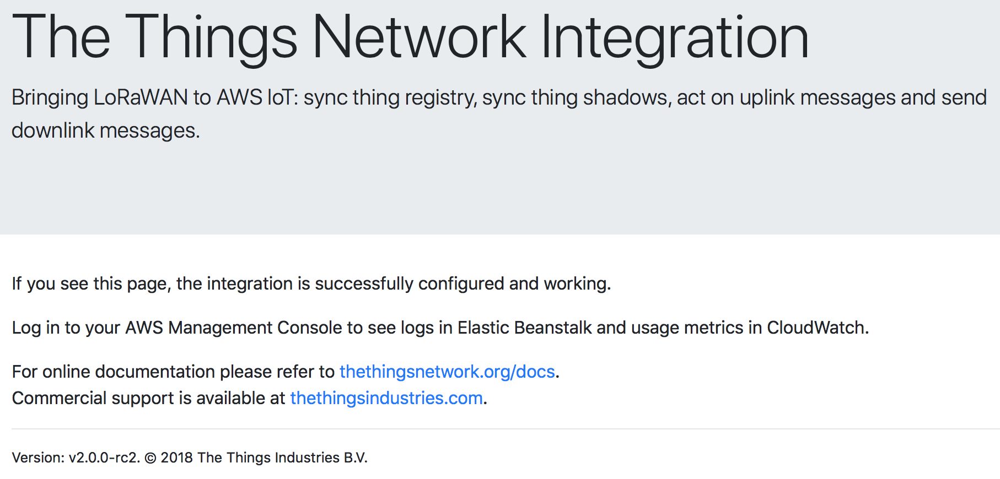

Since the integration runs in your AWS account and within your security context, it is not being updated automatically. This guide walks you through updating the integration that runs as an AWS Elastic Beanstalk application.
- Log in to the AWS Management Console
- In Services under Compute, go to Elastic Beanstalk
- In the menu bar, select your application and click Application Versions

- Download the latest version You can find the latest version here:
https://s3.amazonaws.com/thethingsnetwork/builds/integration-aws/dist/integration-aws-latest.zip
Safari users: the downloaded zip may be extracted automatically and moved to Trash. Since you need to upload the original zip file, copy the file from Trash 🤔
- Click Upload
- Enter a version label, e.g.
update-<date> - At Upload application, select the zip file you downloaded in step 4
- Click Upload

- Select the uploaded version, and click Deploy

-
Click Environments in the menu left and select your environment (gray or green)
-
Verify that the update succeeds

-
Click the URL link in the top of the page
-
Verify that you see the info page, with the current version in the footer
